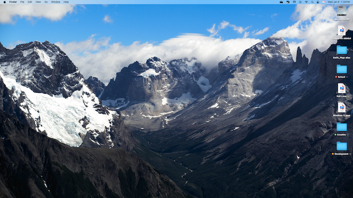
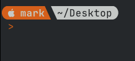
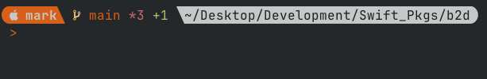

My Profile Picture
Map
This picture was taken in Glacier National Park. On a trip we took in 2022. It was my second time in Glacier and we had a great time until we all got covid the last couple of days of the trip.
My Screenshots
Screenshot of Chrome dev-tools open for Yahoo.com and Bing.com
Screenshot of my desktop from week 1
Screenshot of my custom terminal prompt. I talk a little about customizing your zsh prompt here.
[!NOTE] Screenshot of my terminal prompt showing git information
Example of Blockquotes
In the attendance for this week I mentioned that since I applied a theme to the GitHub pages site the blockquotes were not showing up as expected. I have since fixed that issue. Here are examples:
[!NOTE] This a note
[!WARNING] This is a warning
[!TIP] This is a tip
[!IMPORTANT] This is an important message
[!CAUTION] This is a caution
[!INFO] This is an info message
I was able to do this be adding some JavaScript. While the JavaScript is fairly straightforward the difficulty figuring out how to incorporate it into the Jekyll theme.